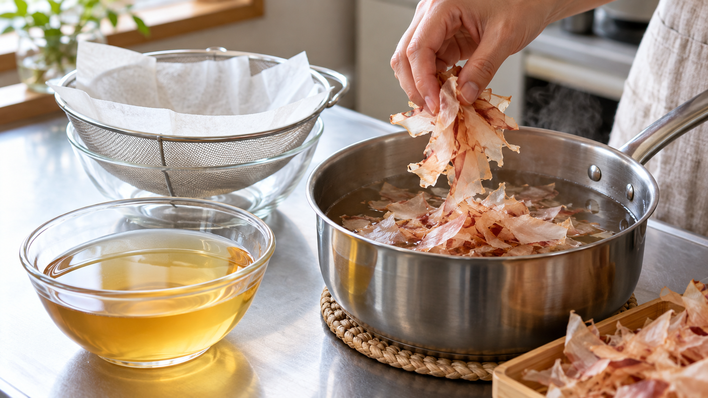

だしは材料を細かくすれば速く出るのか｜表面積と濁り
お吸い物のだしを急いで取るとき、かつお節を手で細かく砕きたくなる。湯に触れる面が増えれば、すぐ濃い味になりそうだ。でも、澄んだ汁にしたいときも、その方法がよいのだろうか。
細かく砕けば必ず早くおいしいだしになる、とは言えない。 澄んだ一番だしには、薄削りのかつお節をそのまま使い、火を止めた湯に短く浸して静かにこす方法が使いやすい。
細かさだけで、欲しい味は決まらない
かつお節から水に成分が移ることを「抽出」と呼ぶ。細かくすると湯に触れる面が増えるため、成分が出やすくなると考えられる。ただし、今回確認した形状別の研究は、取り出された成分の量を比べたもので、何分早く出るかは測っていない。
湯に出るものは、好ましいうま味だけではない。かつお節の削り方を比べた発表では、粗く砕いた節からは測定した成分が多く出た一方、酸味、苦味、雑味も強く感じられた。吸い物やみそ汁に仕上げたときの好みには、はっきりした差が見られなかった。成分が多いことを、そのまま「おいしい」とは置き換えられない。
濁りは時間と節の動きにも関わる
魚節のだしを調べた研究では、長く煮出すほど濁りと脂質が増えた。水に出る成分の多くは早い段階で出ていた。また、袋に入れて節の動きを抑えると、濁りと脂質が少なくなった。著者は、節の表面から脂の小さな粒が汁へ移ることが、濁りに関わると考えている。
この研究で使った魚節や煮出し方は、家庭の薄削りを火を止めた湯に浸す方法とは違う。それでも、澄んだ汁を目指すなら、強くかき混ぜたり長く煮立てたりしない、という判断にはつながる。細かい粉だけが濁りの原因だと決めつける必要はない。
二人分の澄んだ一番だし
水500mL、花かつお（薄削り）15g、鍋、ざる、キッチンペーパーを用意する。分量と時間はヤマキとにんべんが案内する一番だしを半量にした目安だ。
- 鍋の水を沸騰させ、火を止める。
- 花かつおを砕かずに入れる。かき混ぜず、1〜2分待つ。
- キッチンペーパーを敷いたざるで静かにこす。節は絞らない。
こしただしはお吸い物に使う。残った節は、別の水で煮出して二番だしにすれば、みそ汁や煮物にも使える。二番だしでは一番だしと狙う味が違うため、製造元の手順に沿って煮出す。
別の料理では、何を目指すかで決める
同じかつお節でも、澄んだお吸い物と、味噌や具を合わせるみそ汁では、だしに求める役割が違う。前者には静かに取る一番だし、後者にはだしがらを生かす二番だしを選べる。細かくするか迷ったら、まず濃さだけでなく、汁を澄ませたいかを考えよう。
かつお節を砕く前に、今日はどんな汁にしたいかを決める。澄んだ一杯なら、薄削りをそのまま湯に入れて短く待つところから始めよう。